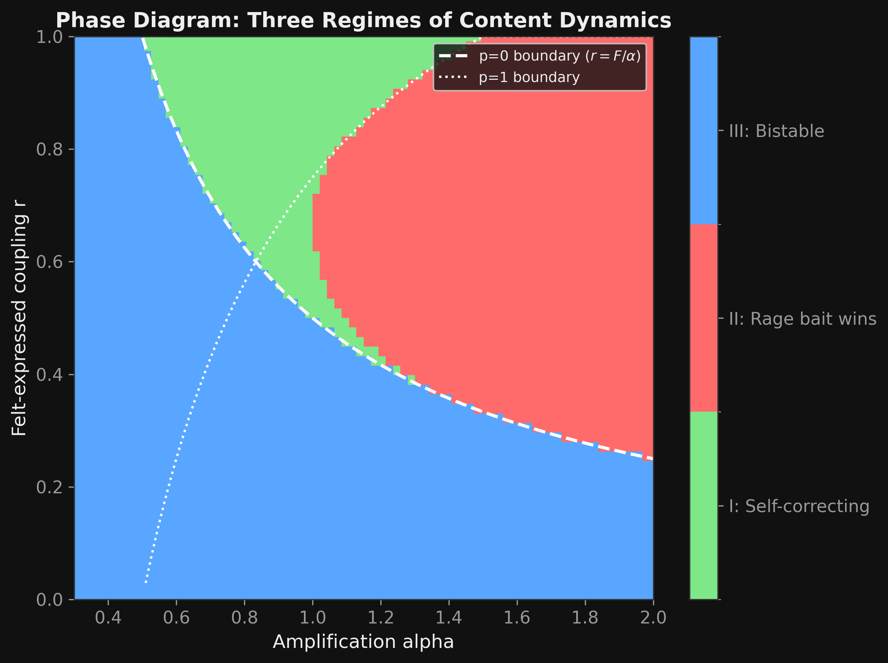
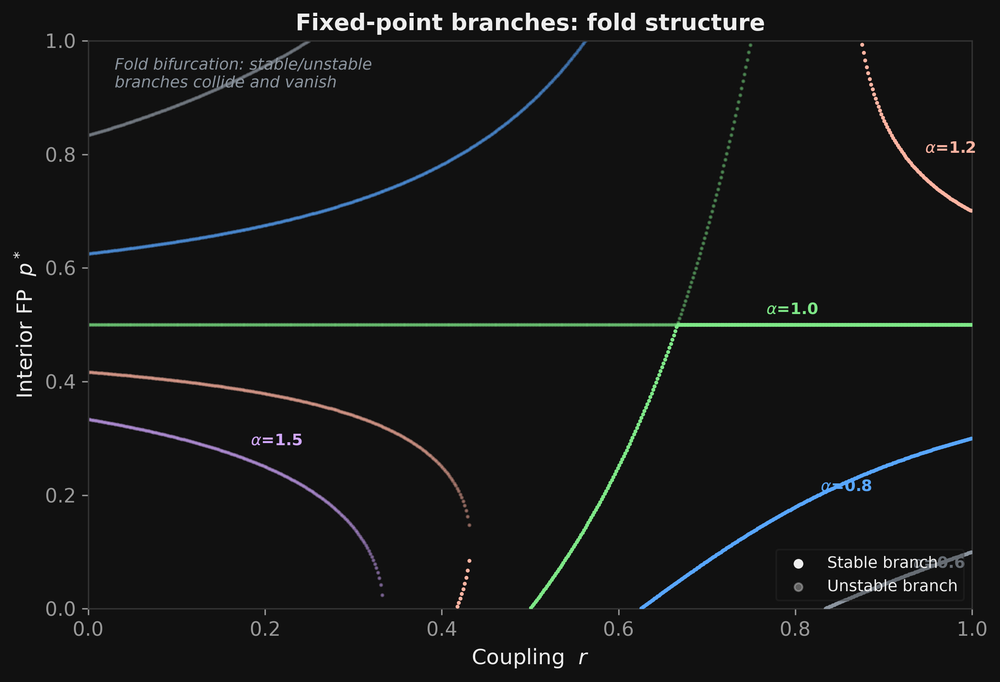
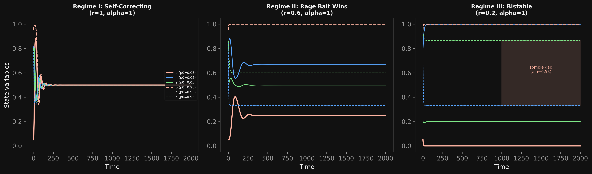
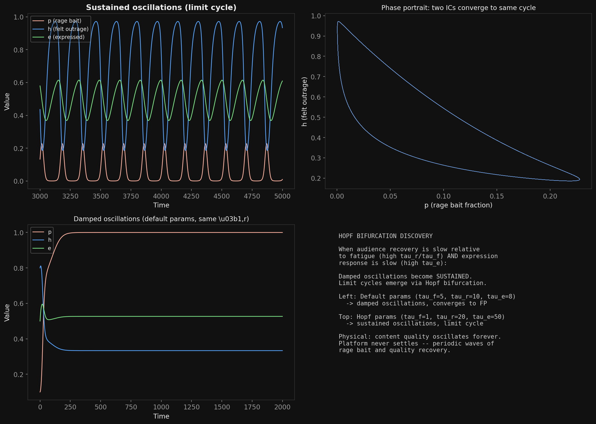
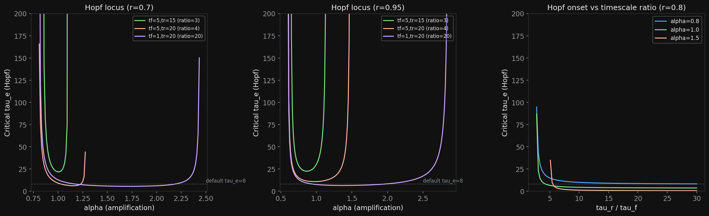
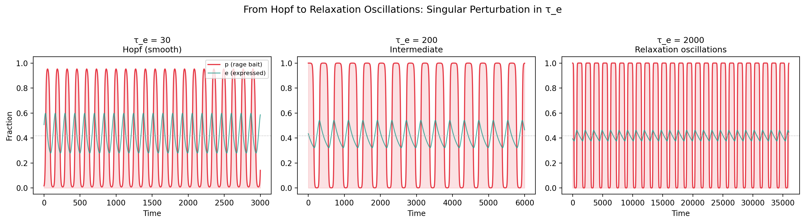
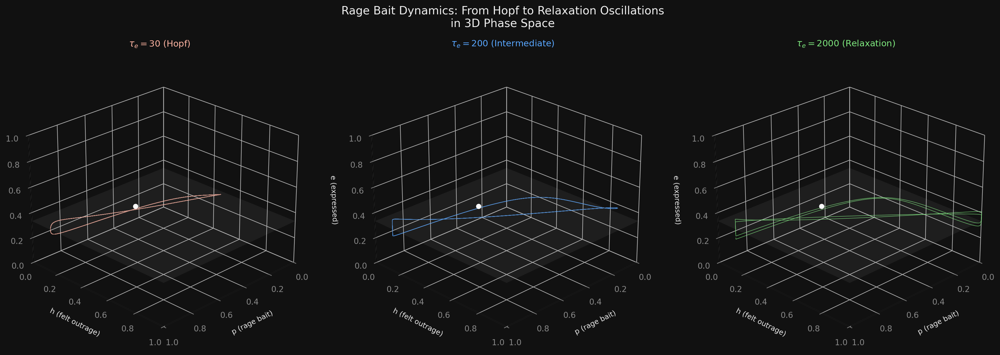
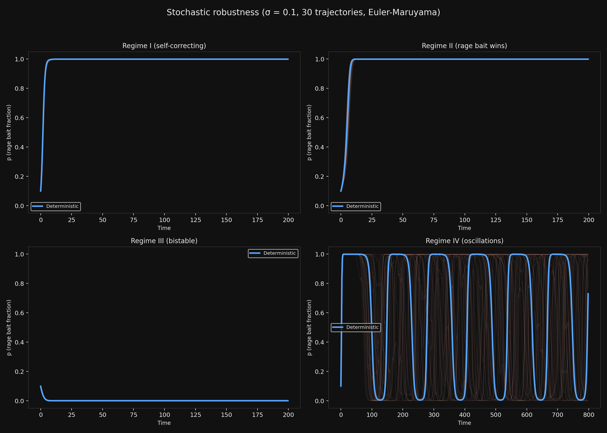
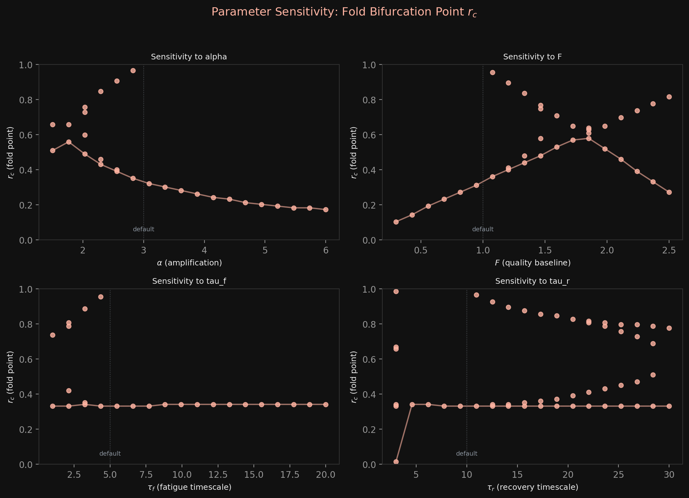
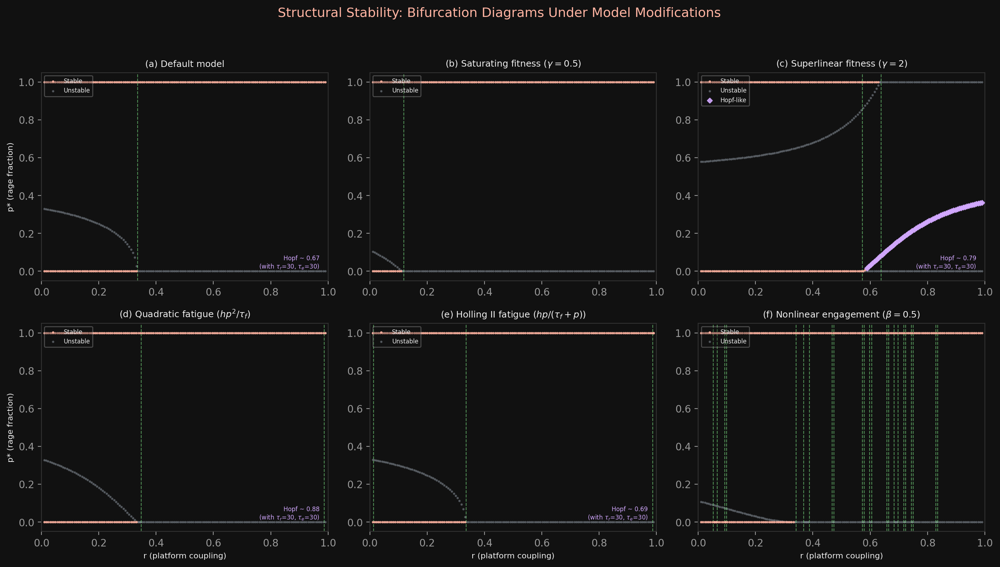

Engagement metrics destroy self-correction: Fold and Hopf bifurcations in a replicator-fatigue model of algorithmic outrage amplification
1Independent
Draft v3 — March 23, 2026
Abstract
We introduce a three-dimensional dynamical system coupling replicator dynamics for content creator strategies with audience outrage fatigue and a felt-expressed engagement decoupling mechanism motivated by empirical social media research. The coupling parameter $r$, measuring how faithfully expressed engagement tracks felt outrage, controls the system's bifurcation structure. We identify four dynamical regimes: (I) self-correcting coexistence with damped oscillations at high $r$, (II) unconditional rage bait dominance at moderate $r$, (III) bistability at low $r$, and (IV) sustained oscillatory dynamics via Hopf bifurcation at extreme timescale separation. The central result is that moderate felt-expressed decoupling is worse than full decoupling: partial coupling destroys the ecosystem's self-correcting mechanism via a fold bifurcation that annihilates the healthy equilibrium entirely. In the bistable regime, "zombie engagement" emerges—expressed engagement far exceeds exhausted felt outrage—a signature observable in platform data. We verify robustness of all four regimes under multiplicative noise (SDE analysis), structural perturbations to functional forms, and continuous parameter variation. The fold bifurcation is structurally stable (codimension 1); the Hopf bifurcation persists under most functional-form modifications when sufficient timescale separation exists.
I. Introduction
Social media platforms optimize for engagement. But engagement and user satisfaction diverge: Milli et al. [1] demonstrated experimentally that engagement-based algorithmic ranking amplifies emotionally charged, out-group hostile content that users do not prefer upon reflection. This wedge between what engagement metrics capture and what users actually value creates selection pressure for provocative content—a niche exploited by rage bait.
The empirical foundations are well established. Brady et al. [2] showed that each additional moral-emotional word in a tweet increases its diffusion by approximately 20%, an effect replicated across platforms [3]. Huszar et al. [4] documented systematic algorithmic amplification of political content on Twitter. The mechanism is straightforward: algorithms trained on engagement signals preferentially surface outrage-inducing content, which generates clicks and shares even when users find it aversive.
Existing theoretical work addresses components of this ecosystem in isolation. Epidemic models treat outrage as a contagion process with exogenous content [5,6]. Game-theoretic approaches model producer strategy [7] or platform design [8] without incorporating audience fatigue. Evolutionary models of content quality and audience selectivity [9] lack outrage-specific dynamics. No model couples all three elements—strategic content production, algorithmic amplification, and audience outrage fatigue—into a unified dynamical system.
The key psychological insight motivating our model comes from Crockett [10], who argued that digital platforms decouple outrage expression from outrage experience. Social rewards (likes, shares, followers) sustain outrage expression even after genuine emotional response has faded. Brady et al. [11] confirmed this empirically: social learning amplifies moral outrage expression through positive feedback, with network norms dominating individual emotional states in ideologically extreme environments. This felt-expressed decoupling is the mechanism we formalize.
We introduce a three-dimensional ODE model coupling: (i) replicator dynamics for content creator strategies, where rage bait fitness depends on algorithmically amplified expressed engagement; (ii) audience felt outrage capacity, which depletes under exposure and recovers over time; and (iii) expressed engagement, which blends felt outrage (weight $r$) and social conformity signals (weight $1-r$). The parameter $r \in [0,1]$ controls how faithfully the engagement signal—the quantity platforms optimize—tracks genuine audience state.
Our central result is that moderate decoupling ($r$ at intermediate values) is worse than full decoupling ($r \approx 0$). The mechanism is a fold (saddle-node) bifurcation: as $r$ decreases from 1, the healthy coexistence equilibrium does not merely lose stability—it ceases to exist entirely. This is a stronger, more catastrophic transition than simple destabilization. At very low $r$, quality content regains local stability, but the system is bistable and vulnerable to large perturbations.
Beyond the three-regime structure, we find that extreme timescale separation—slow audience recovery relative to fast fatigue, combined with sluggish engagement metrics—produces a fourth regime of sustained oscillations via supercritical Hopf bifurcation. This "boom-bust" cycle of rage bait adoption has qualitative support in the observed quasi-periodic "main character of the day" phenomenon on social media platforms.
The paper is organized as follows. Section II reviews connections to existing models. Section III defines the model. Section IV derives the equilibria and bifurcation structure. Section V characterizes the four dynamical regimes. Section VI presents the phase diagram and parameter sensitivity. Section VII presents robustness analysis. Section VIII justifies the minimal model. Section IX discusses implications and limitations.
II. Connection to existing models
Our model sits at the intersection of several established theoretical frameworks in sociophysics, evolutionary game theory, and computational social science. We position our contribution relative to each, identifying what existing models capture, what they miss, and how our three-variable system fills the gap.
A. Opinion dynamics and voter models
The statistical physics of opinion formation provides the broadest context. The canonical review by Castellano, Fortunato, and Loreto [14] established the toolkit: binary voter models, bounded confidence models (Hegselmann–Krause [15], Deffuant et al. [16]), and Sznajd-type social validation dynamics [17]. These models describe how microscopic interaction rules produce macroscopic opinion states—consensus, polarization, or fragmentation—via phase transitions controlled by tolerance thresholds, network topology, or zealot fractions.
The bounded confidence framework is particularly instructive: as the confidence bound $\epsilon$ decreases, the Hegselmann–Krause model transitions from consensus to clustering to fragmentation [15]. This parallels our model's transition structure as $r$ decreases, but with a critical difference. In bounded confidence models, agents hold and update opinions; the transition reflects geometric disconnection in opinion space. In our model, the transition reflects the destruction of a feedback mechanism—the fold bifurcation at intermediate $r$ annihilates the coexistence equilibrium rather than merely fragmenting the opinion landscape.
Recent work has brought voter models closer to social media phenomenology. De Marzo, Zaccaria, and Castellano [18] introduced a voter model with personalized information, showing that algorithmic content curation creates a phase transition to polarization above a critical personalization strength. Iannelli, De Marzo, and Castellano [19] extended this to the multistate voter model, demonstrating that filter bubble effects produce a phase transition at a critical recommendation strength $\lambda_c$. Most recently, Veider, Jäger, and Tang [20] showed that local rewiring—mimicking recommendation algorithms—fragments the voter model into many small disconnected components rather than the usual two-cluster polarization.
These models capture the demand side of the problem: how audiences process and adopt opinions under algorithmic mediation. What they uniformly lack is the supply side: strategic content creation. No voter model includes agents who choose what content to produce based on the fitness landscape created by audience engagement. Our replicator equation for $p$, Eq. (1), fills this gap by making content strategy itself a dynamical variable subject to selection pressure.
B. Epidemic models of information and outrage spreading
The SIR/SIS framework has been widely adapted for information and emotion spreading. Dodds and Watts [5] developed generalized contagion models interpolating between simple contagion and complex contagion. Fan, Xu, and Zhao [6] modeled anger and joy as competing contagion processes on social media, finding that anger spreads preferentially through weak ties.
A particularly relevant recent contribution is Bulai, Sensi, and Sottile [21], who coupled a slow SIRS disease-spreading model with a fast information/misinformation spreading model and analyzed the resulting system using Geometric Singular Perturbation Theory (GSPT). Their fast-slow decomposition is structurally analogous to our GSPT analysis of the $\tau_e \to \infty$ limit (Sec. V.D), where expressed engagement $e$ is the slow variable and creator strategy $p$ switches rapidly. Both systems exhibit relaxation oscillations arising from timescale separation.
The fundamental limitation of all epidemic models applied to outrage is that they treat content as exogenous. In SIS/SIR variants, the "pathogen" (outrage-inducing content) exists independently of the population's state. Our model endogenizes content production: the rage bait prevalence $p$ is itself a dynamical variable that responds to the engagement landscape.
C. Evolutionary game theory on networks
Our replicator equation draws directly from the evolutionary game theory tradition [12,22]. Our innovation is in the fitness functions: rage bait fitness $\alpha e$ depends on expressed engagement $e$, which is itself a dynamical variable coupled to audience state $h$, rather than being a fixed payoff.
The closest evolutionary game-theoretic precedent is the content quality coevolution model of Chujyo et al. [9], who model creators choosing production effort and audiences choosing selectivity, finding three regimes (collapse, boundary, coexistence) that parallel our Regimes II, the fold, and I respectively. However, their model does not include outrage-specific dynamics, audience fatigue, or felt-expressed decoupling.
D. Media competition and attention economy models
Acemoglu, Ozdaglar, and Siderius [8] model social media as a sequential sharing game where engagement-maximizing algorithms endogenously create filter bubbles. Stewart et al. [7] demonstrated formally that producer strategies can distort engagement signals. Mariano and Frasca [23] recently formulated recommendation system design as a state-feedback optimal control problem, finding that naive engagement maximization can destabilize the system—directly parallel to our finding that the engagement signal $e$, when decoupled from felt state $h$, creates pathological dynamics.
E. Polarization, echo chambers, and bifurcation analysis
Liu et al. [24] discovered a universal scaling law for opinion distributions in coevolving networks, identifying two phase transitions across three polarization phases. Gaisbauer, Olbrich, and Banisch [25] introduced a model that explicitly separates opinion expression from opinion holding—the closest conceptual precedent to our felt ($h$) versus expressed ($e$) decomposition. However, their model addresses opinion visibility, not engagement metrics, and does not include strategic content production or audience fatigue.
Our model contributes to this bifurcation-theoretic literature by identifying a novel mechanism: the fold bifurcation that annihilates the healthy coexistence equilibrium as the felt-expressed coupling $r$ decreases. Unlike the pitchfork and transcritical bifurcations found in standard opinion dynamics models, the fold bifurcation is catastrophic—the equilibrium ceases to exist rather than merely losing stability, and the transition is hysteretic.
F. The gap our model fills
Table I summarizes how existing frameworks address the components of the rage bait ecosystem.
| Framework | Strategic production | Audience fatigue | Engagement decoupling | Bifurcation analysis |
|---|---|---|---|---|
| Voter/opinion models | — | — | — | ✓ |
| Epidemic (SIS/SIR) | — | ✓* | — | partial |
| Evolutionary game theory | ✓ | — | — | ✓ |
| Media competition | ✓ | — | partial | — |
| Echo chamber models | — | — | partial† | ✓ |
| This work | ✓ | ✓ | ✓ | ✓ |
*Recovery in SIS models is analogous to fatigue recovery but is not driven by content exposure. †Gaisbauer et al. [25] distinguish expression from holding but without strategic production or fatigue.
III. Model
A. Replicator dynamics for content creators
We consider a population of content creators choosing between two strategies: quality content (fitness $F$, a constant baseline) and rage bait (fitness $\alpha e$, where $\alpha$ is the algorithmic amplification factor and $e$ is expressed engagement). The fraction of creators using rage bait, $p \in [0,1]$, evolves according to the replicator equation [12]:
$$\frac{dp}{dt} = p(1-p)[\alpha e - F]. \tag{1}$$When expressed engagement $e$ is high enough that $\alpha e > F$, rage bait is the fitter strategy and its prevalence grows.
B. Felt outrage capacity
Audiences have a felt outrage capacity $h \in [0,1]$ representing their genuine emotional responsiveness to provocative content. This capacity recovers toward its maximum ($h = 1$) at rate $1/\tau_r$ and is depleted by exposure to rage bait at a rate proportional to $p$:
$$\frac{dh}{dt} = \frac{1-h}{\tau_r} - \frac{h \cdot p}{\tau_f}. \tag{2}$$At equilibrium, $h^* = \tau_f / (\tau_f + p^* \tau_r)$, which decreases monotonically with rage bait prevalence.
C. Expressed engagement: the key equation
The core modeling innovation is the expressed engagement equation:
$$\frac{de}{dt} = \frac{r \cdot h + (1-r) \cdot p - e}{\tau_e}. \tag{3}$$Expressed engagement $e$ relaxes toward a target that blends two signals:
- Felt outrage (weight $r$): the genuine emotional response $h$.
- Social conformity (weight $1-r$): the prevalence of rage bait $p$, serving as a proxy for social norms around outrage expression.
The parameter $r \in [0,1]$ is the felt-expressed coupling. When $r = 1$, expressed engagement perfectly tracks felt outrage. When $r = 0$, expressed engagement tracks social norms regardless of felt emotion. This formulation is motivated by Crockett [10] and Brady et al. [11]: on digital platforms, outrage expression can persist through social learning and reward even when the underlying emotion has faded.
D. Parameters
| Parameter | Symbol | Default | Interpretation |
|---|---|---|---|
| Algorithmic amplification | $\alpha$ | varied | Boost to rage bait engagement |
| Quality baseline fitness | $F$ | 0.5 | Engagement from quality content |
| Felt-expressed coupling | $r$ | varied | Fidelity of engagement to felt outrage |
| Fatigue timescale | $\tau_f$ | 5.0 | Outrage capacity depletion time |
| Recovery timescale | $\tau_r$ | 10.0 | Outrage capacity recovery time |
| Expression response time | $\tau_e$ | 8.0 | Lag in expressed engagement |
E. The $r = 1$ reduction
When $r = 1$ and $\tau_e \to 0$, Eq. (3) gives $e = h$ and the system reduces to two dimensions:
$$\frac{dp}{dt} = p(1-p)(\alpha h - F), \qquad \frac{dh}{dt} = \frac{1-h}{\tau_r} - \frac{hp}{\tau_f}. \tag{4}$$This limit is fully tractable and serves as a benchmark: with perfect felt-expressed coupling, the system always self-corrects when the interior equilibrium exists. All pathologies arise from imperfect coupling ($r < 1$).
IV. Equilibria and bifurcation analysis
A. Boundary fixed points
Quality equilibrium ($p^* = 0$). Setting $p = 0$ gives $h^* = 1$ and $e^* = r$. The linearized growth rate is
$$\left.\frac{dp}{dt}\right|_{p \approx 0} \approx p(\alpha r - F). \tag{5}$$The quality equilibrium is stable if and only if
$$r < \frac{F}{\alpha}. \tag{6}$$At $r = 0$, the growth rate is $-pF < 0$: quality is always stable when engagement is fully decoupled.
Rage bait equilibrium ($p^* = 1$). Setting $p = 1$ gives $h^* = \tau_f/(\tau_f + \tau_r)$ and $e^* = 1 - r\tau_r/(\tau_f + \tau_r)$. This equilibrium is stable if and only if
$$\alpha\left[1 - \frac{r\tau_r}{\tau_f + \tau_r}\right] > F. \tag{7}$$B. Interior fixed points
At an interior equilibrium ($0 < p^* < 1$), Eq. (1) requires $\alpha e^* = F$, so $e^* = F/\alpha$. From Eqs. (2) and (3) at equilibrium:
$$h^* = \frac{\tau_f}{\tau_f + p^* \tau_r}, \qquad e^* = r h^* + (1-r) p^*. \tag{8}$$Combining with $e^* = F/\alpha$ yields the implicit equation for $p^*$:
$$g(p^*, r) \equiv \frac{r\tau_f}{\tau_f + p^* \tau_r} + (1-r)p^* = \frac{F}{\alpha}. \tag{9}$$The derivative with respect to $p$ is
$$\frac{\partial g}{\partial p} = -\frac{r\tau_r\tau_f}{(\tau_f + p\tau_r)^2} + (1-r). \tag{10}$$For $r$ near 1, $g$ is monotonically decreasing in $p$ and a unique interior root exists. For $r$ near 0, $g \approx (1-r)p$ is monotonically increasing. For intermediate $r$, the function $g$ is non-monotone with an interior minimum at
$$p_{\min} = \frac{1}{\tau_r}\left[\sqrt{\frac{r\tau_r\tau_f}{1-r}} - \tau_f\right], \tag{11}$$which creates the possibility of zero or two roots in $(0,1)$, leading to fold bifurcations.
C. Jacobian and characteristic polynomial
The Jacobian at an interior fixed point, where $\alpha e^* = F$ so that $J_{11} = 0$, is
$$J = \begin{pmatrix} 0 & 0 & q\alpha \\ -h^*/\tau_f & -\sigma & 0 \\ (1-r)/\tau_e & r/\tau_e & -1/\tau_e \end{pmatrix}, \tag{12}$$where $q = p^*(1-p^*)$ and $\sigma = 1/\tau_r + p^*/\tau_f$. The characteristic polynomial is
$$\lambda^3 + a_1 \lambda^2 + a_2 \lambda + a_3 = 0, \tag{13}$$with coefficients
$$a_1 = \sigma + \frac{1}{\tau_e}, \tag{14}$$ $$a_2 = \frac{\sigma - q\alpha(1-r)}{\tau_e}, \tag{15}$$ $$a_3 = \frac{q\alpha}{\tau_e}\left[\frac{rh^*}{\tau_f} - (1-r)\sigma\right]. \tag{16}$$D. Routh-Hurwitz stability conditions
The interior fixed point is asymptotically stable if and only if
$$a_1 > 0, \qquad a_3 > 0, \qquad a_1 a_2 > a_3. \tag{17}$$Condition $a_1 > 0$: Holds unconditionally since $\sigma > 0$ and $\tau_e > 0$.
Condition $a_3 > 0$: Requires
$$\frac{rh^*}{\tau_f} > (1-r)\sigma. \tag{18}$$Substituting $h^* = \tau_f/(\tau_f + p^*\tau_r)$ and defining $\beta = \tau_f + p^*\tau_r$, this yields the critical coupling
$$r_c = \frac{\beta^2}{\beta^2 + \tau_f\tau_r}. \tag{19}$$Condition $a_1 a_2 > a_3$ (Hopf criterion). The Hopf bifurcation occurs when $\sigma$ drops below
$$\sigma_{\text{crit}} = \frac{1}{2}\left[-\frac{1}{\tau_e} + \sqrt{\frac{1}{\tau_e^2} + 4q\alpha\phi}\right], \qquad \phi = \frac{1-r}{\tau_e} + \frac{r}{\beta}. \tag{20}$$For default parameters ($\tau_f = 5$, $\tau_r = 10$, $\tau_e = 8$), the Hopf bifurcation is inaccessible. However, when $\tau_r/\tau_f \gtrsim 3$, a pair of complex-conjugate eigenvalues crosses the imaginary axis, producing a supercritical Hopf bifurcation and stable limit cycles.
E. Fold (saddle-node) bifurcation
For intermediate $r$, the non-monotonicity of $g(p, r)$ creates a pair of interior fixed points. As $r$ decreases, these annihilate at a saddle-node (fold) bifurcation where $g(p^*, r) = F/\alpha$ and $\partial g/\partial p = 0$ simultaneously:
$$\frac{r\tau_r\tau_f}{(\tau_f + p^*\tau_r)^2} = 1 - r. \tag{21}$$The fold bifurcation is the mechanism that destroys the self-correcting equilibrium. Unlike a stability boundary crossing, the fold annihilates the equilibrium entirely—there is no nearby state to which the system could return.
F. The $r = 1$ limit
At $r = 1$ with $\tau_e \to 0$, the Jacobian trace and determinant are
$$\text{tr}(J) = -\left(\frac{1}{\tau_r} + \frac{p^*}{\tau_f}\right) < 0, \qquad \det(J) = \frac{p^*(1-p^*)\alpha h^*}{\tau_f} > 0. \tag{22}$$Both stability conditions hold unconditionally: perfect felt-expressed coupling guarantees self-correction.
V. The four regimes

A. Regime I: Self-correcting coexistence
Conditions: $r > F/\alpha$ (quality equilibrium unstable) and the interior fixed point exists and is stable ($a_3 > 0$, $a_1 a_2 > a_3$).
The system converges to a mixed equilibrium $p^* \in (0,1)$ where quality content and rage bait coexist. The approach is typically oscillatory (stable spiral): rage bait prevalence overshoots, audience fatigues, engagement drops, quality recovers, audience recovers, and the cycle repeats with decreasing amplitude.
These damped oscillations constitute the ecosystem's self-correcting mechanism. The negative feedback loop—rage bait $\to$ fatigue $\to$ engagement drop $\to$ quality recovery—functions as an immune response.
B. Regime II: Unconditional rage bait dominance
Conditions: The quality equilibrium is unstable, no stable interior fixed point exists (destroyed by fold bifurcation), and the rage bait equilibrium is stable.
This is the most dangerous regime. All initial conditions flow to $p = 1$. The self-correcting mechanism has been destroyed: expressed engagement, sustained by social conformity, remains high enough to support rage bait fitness even as audiences are exhausted. The width of Regime II in $r$ grows with $\alpha$—strong algorithmic amplification creates a wide danger zone.
C. Regime III: Bistability
Conditions: $r < F/\alpha$ (quality equilibrium stable) and the rage bait equilibrium is also stable.
Both $p = 0$ (quality) and $p = 1$ (rage bait) are locally stable. The outcome is history-dependent. This regime exhibits zombie engagement: at the rage bait equilibrium, expressed engagement $e^*$ far exceeds felt outrage capacity $h^*$:
$$e^* - h^* = \frac{(1-r)\tau_r}{\tau_f + \tau_r}, \tag{23}$$which grows as $r \to 0$. Platform engagement metrics show a healthy audience; the actual audience is emotionally exhausted.


D. Regime IV: Sustained oscillations (limit cycles)
Conditions: Interior fixed point exists with $a_3 > 0$, but the Hopf condition $a_1 a_2 > a_3$ is violated. Requires $\tau_r/\tau_f \gtrsim 3$ and sufficiently large $\tau_e$.
When audience recovery is much slower than fatigue and the expressed engagement signal lags significantly, the damped oscillations of Regime I become self-sustaining. The system settles onto a stable limit cycle (period $\approx 169$ time units at $\tau_f = 5$, $\tau_r = 15$, $\tau_e = 30$). The oscillation period scales approximately as $\sqrt{\tau_r \cdot \tau_e}$.


Relaxation oscillations and the singular limit
The Hopf bifurcation admits a clean interpretation through Geometric Singular Perturbation Theory (GSPT). In the limit $\tau_e \to \infty$, expressed engagement $e$ becomes a slow variable while $p$ and $h$ evolve on fast timescales. The fast subsystem exhibits a discontinuous transition at $e = F/\alpha$: below this threshold, quality dominates ($p \to 0$); above it, rage bait dominates ($p \to 1$).
On the slow manifold, $e$ evolves toward either $r$ (when $p = 0$) or $1 - r\tau_r/(\tau_f + \tau_r)$ (when $p = 1$). When both boundary equilibria are unstable, the slow dynamics drive $e$ across the fast switching threshold repeatedly, producing relaxation oscillations: the system alternates between quality eras and rage bait eras.


E. The central result
The four regimes reveal a paradox. As $r$ decreases from 1:
- At $r \approx 1$: Regime I. Self-correcting coexistence. The ecosystem is healthy.
- At intermediate $r$: Regime II. The healthy equilibrium is destroyed by a fold bifurcation. Unconditional rage bait dominance.
- At $r \approx 0$: Regime III. Quality regains local stability.
The transition from Regime I to Regime II is not gradual degradation—it is catastrophic annihilation of the healthy equilibrium. The platform design implication is stark: either measure user satisfaction directly (restore $r$ toward 1) or acknowledge that engagement metrics are uninformative (accept $r \approx 0$). The intermediate regime—the configuration most current platforms occupy—is the most dangerous.
VI. Phase diagram and parameter sensitivity
A. Phase diagram in $(\alpha, r)$ space
The regime boundaries in the $(\alpha, r)$ plane are determined by three bifurcation curves:
- Transcritical at $p = 0$: $r = F/\alpha$. Below this curve, $p = 0$ is stable.
- Transcritical at $p = 1$: $r = (\tau_f + \tau_r)(1 - F/\alpha)/\tau_r$. Below this curve, $p = 1$ is stable.
- Fold: The saddle-node locus $r_{\text{SN}}(\alpha)$, marking destruction of the interior fixed point.
B. Sensitivity to expression response time $\tau_e$
Larger $\tau_e$ (slower engagement response) widens Regime II. When the engagement signal lags, self-correcting feedback is delayed, and the fold bifurcation occurs at higher $r$. In the limit $\tau_e \to 0$, Regime II narrows and the system approaches the always-self-correcting $r = 1$ benchmark.
C. Sensitivity to fatigue-recovery ratio $\tau_r/\tau_f$
When fatigue is fast relative to recovery ($\tau_r/\tau_f$ large), the interior fixed point shifts to higher $p^*$. For sufficiently extreme ratios ($\tau_r/\tau_f \gtrsim 3$), the Hopf bifurcation becomes accessible.
D. Sensitivity to quality baseline $F$
Higher $F$ narrows all rage bait dominance regions. The transcritical boundary $r = F/\alpha$ shifts upward, making the quality equilibrium stable over a wider range of $r$.
VII. Robustness analysis
A. Stochastic robustness
We verified robustness of all four regimes by adding multiplicative noise to the deterministic model:
$$dp = p(1-p)[\alpha e - F]\,dt + \sigma\, p(1-p)\,dW_1 \tag{24}$$ $$dh = \left[\frac{1-h}{\tau_r} - \frac{h\,p}{\tau_f}\right]dt + \sigma\,\sqrt{h(1-h)}\,dW_2 \tag{25}$$ $$de = \frac{r\,h + (1-r)\,p - e}{\tau_e}\,dt + 0.1\sigma\,dW_3 \tag{26}$$Noise terms were chosen to preserve domain boundaries: logistic noise for $p$ (vanishes at $p = 0,1$), Wright-Fisher noise for $h$ (vanishes at $h = 0,1$), and weak additive noise for $e$ (an aggregate quantity). Integration used Euler-Maruyama with $dt = 0.01$ and reflecting boundaries at $[0.001, 0.999]$.
Regime I ($r = 0.9$): Robust. All 30 trajectories converge to the same interior equilibrium at all noise levels ($\sigma = 0.01$ to $0.2$). The spiral approach to equilibrium is preserved.
Regime II ($r = 0.5$): Robust. All trajectories converge to $p \approx 1$ at all noise levels. Even at $\sigma = 0.2$, no trajectory escapes to the quality basin.
Regime III ($r = 0.1$): Robust for given initial conditions. From $p_0 = 0.1$ (quality basin), all trajectories remain near $p \approx 0$ at all tested noise levels. At higher $\sigma$ or longer integration times, noise-induced basin transitions are expected (Kramers escape).
Regime IV ($r = 0.9$, $\tau_r = 30$, $\tau_e = 30$): Robust. The relaxation oscillation cycle survives all noise levels up to $\sigma = 0.2$. Phase diffusion increases with $\sigma$ but the cycle structure—amplitude, period, waveform shape—is preserved. This is expected from GSPT: the relaxation oscillation is structurally stable because it is controlled by the fold structure of the slow manifold.

B. Parameter sensitivity
The fold bifurcation point $r_c$ depends continuously on model parameters:
- $\alpha$ (amplification): $r_c$ ranges from 0.17 to 0.97. Higher $\alpha$ pushes $r_c$ higher—stronger amplification requires more capacity-coupling to self-correct.
- $F$ (quality baseline): $r_c$ ranges from 0.10 to 0.96. Higher $F$ pushes $r_c$ lower—better quality content makes self-correction easier.
- $\tau_f$ (fatigue timescale): $r_c$ ranges from 0.33 to 0.96. Slower fatigue delays self-correction.
- $\tau_r$ (recovery timescale): $r_c$ ranges from 0.01 to 0.99. Slower recovery makes self-correction harder.

C. Structural stability
We tested whether the bifurcation structure survives under modifications to functional forms. The key question: are the fold and Hopf bifurcations artifacts of the specific functional forms chosen?
| Variant | Fold survives? | Hopf survives? |
|---|---|---|
| Default model | Yes ($r_c \sim 0.34$) | Yes ($r \sim 0.67$) |
| Saturating fitness ($\gamma = 0.5$) | Yes ($r_c \sim 0.12$) | No |
| Superlinear fitness ($\gamma = 2$) | Yes ($r_c \sim 0.57$) | Yes ($r \sim 0.79$) |
| Quadratic fatigue ($hp^2/\tau_f$) | Yes ($r_c \sim 0.35$) | Yes ($r \sim 0.88$) |
| Holling II fatigue ($hp/(\tau_f+p)$) | Yes ($r_c \sim 0.34$) | Yes ($r \sim 0.69$) |
| Nonlinear engagement ($\beta = 0.5$) | Yes (multiple folds) | No |
| Nonlinear engagement ($\beta = 2$) | Yes ($r_c \sim 0.32$) | Yes ($r \sim 0.66$) |
The fold bifurcation is structurally stable. It persists across all tested functional form modifications. This is expected from bifurcation theory: fold bifurcations have codimension 1 and are generically stable under smooth perturbation.
The Hopf bifurcation is more sensitive to functional form but still appears in most variants when timescale separation is sufficient, consistent with its dependence on the specific eigenvalue structure of the Jacobian.

VIII. Why the minimal model
A. The case for three variables
A dynamical systems model of the rage bait ecosystem must capture three conceptually distinct quantities: (i) what creators do (content strategy $p$), (ii) what audiences feel (outrage capacity $h$), and (iii) what the platform sees (expressed engagement $e$). Each variable represents a different agent class—creators, users, and the algorithmic intermediary—and each evolves on a potentially different timescale. The model's central result, that moderate felt-expressed decoupling is worse than full decoupling, emerges from the interaction of all three and cannot be obtained from any two-variable reduction.
B. Why not fewer: irreducibility of the 3D system
Reduction 1: $e = h$ (set $r = 1$, $\tau_e \to 0$). This eliminates the decoupling mechanism, yielding the 2D predator-prey system. As shown in Sec. IV.F, this reduced system has a stable interior equilibrium whenever it exists: $\text{tr}(J) < 0$ and $\det(J) > 0$ unconditionally. The 2D system always self-corrects. It cannot produce Regime II or Regime III.
Reduction 2: $h \to h^*(p)$ (fast audience response). If audience fatigue equilibrates instantly, the system reduces to two dimensions but loses the oscillatory dynamics. The Hopf bifurcation of Regime IV, and the damped spiral approach to coexistence in Regime I, both require three coupled dynamical variables.
Thus three dimensions is the minimal number that simultaneously produces: (a) the non-monotonic $r$-dependence and fold bifurcation, (b) oscillatory self-correction via fatigue-recovery cycles, (c) the Hopf bifurcation to sustained oscillations, and (d) the zombie engagement diagnostic.
C. Why not more: deliberate omissions
Several extensions are natural and we have deliberately excluded them to isolate the mechanism:
Creator heterogeneity. The binary quality/rage-bait dichotomy captures the essential strategic tension. Extensions to continuous strategy spaces would modify quantitative thresholds but not the qualitative regime structure, since the fold bifurcation depends on the topology of the nullcline $g(p,r) = F/\alpha$.
Multiple content types. A multi-type model would increase dimensionality without adding qualitative insight into the decoupling mechanism.
Platform revenue and algorithmic adaptation. Making $\alpha$ dynamic would introduce a fourth variable, but the timescale of algorithm updates ($\sim$months) is much longer than the content-audience dynamics ($\sim$days to weeks), justifying treating $\alpha$ as a slow parameter.
Network structure. Our mean-field model isolates the mechanism; the network extension addresses its spatial manifestation and is orthogonal to our central question.
User exit and platform competition. The zombie engagement phenomenon (Regime III) is precisely the regime where engagement metrics mask the need for user exit, and thus where platform-internal dynamics matter most.
D. The feedback loop that requires three variables
The three-variable structure captures a specific feedback loop that no two-variable model contains:
$$\underbrace{p \uparrow}_{\text{more rage bait}} \;\to\; \underbrace{h \downarrow}_{\text{audience fatigues}} \;\to\; \underbrace{e \neq h}_{\text{decoupled engagement}} \;\to\; \underbrace{\text{fitness signal corrupted}}_{\alpha e \neq \alpha h} \;\to\; \underbrace{p \text{ evolves on wrong signal}}_{\text{no self-correction}} \tag{27}$$In a two-variable model where $e = h$, step three cannot occur: the engagement signal is always honest, the fitness landscape always reflects audience state, and the replicator dynamics always self-correct.
E. Falsifiability and empirical handles
The minimal model makes several testable predictions:
- The zombie engagement diagnostic. In Regime III, expressed engagement should substantially exceed proxies for felt outrage (dwell time, self-reported satisfaction, physiological measures). The ratio is a direct function of $r$ and $p^*$.
- Non-monotonic platform response. Platforms that partially improve their engagement-satisfaction alignment should observe worsening content quality before improvement—crossing into Regime II before reaching Regime I.
- Oscillation period scaling. In Regime IV, the period should scale as $\sim\tau_e$, with amplitude approaching rail-to-rail as timescale separation increases.
IX. Discussion
A. Empirical predictions
Zombie engagement. The divergence $e^* - h^*$ at the rage bait equilibrium is observable. Platforms could measure it by comparing behavioral engagement metrics (clicks, shares, watch time) with prompted self-reports of emotional response or satisfaction. A growing gap indicates Regime III dynamics.
Catastrophic transition. The fold bifurcation predicts that changes in algorithmic coupling produce sharp, not gradual, transitions in content quality. A/B experiments varying the weight of satisfaction signals in recommendation algorithms should reveal a threshold effect.
Oscillation period. In Regime IV, the predicted oscillation period scales as $\sqrt{\tau_r \cdot \tau_e}$. Platforms with very different audience turnover rates should exhibit different oscillation periods.
Regime II prevalence. Current social media platforms likely operate at intermediate $r$: engagement metrics partially correlate with satisfaction but imperfectly. Our model predicts that these platforms are in the most dangerous regime.
B. Platform design implications
The central result translates directly into a design recommendation: intermediate coupling between engagement metrics and user satisfaction is the worst possible configuration. Two alternatives are preferable:
- High coupling ($r \to 1$): Track user satisfaction directly through satisfaction surveys, regret metrics, or well-being indicators, and use these as optimization targets. This restores Regime I dynamics.
- Acknowledged decoupling ($r \to 0$): If satisfaction measurement is infeasible, at least avoid using engagement as a proxy for satisfaction. This places the system in Regime III, where quality is locally stable (though vulnerable to large shocks).
The dangerous middle ground is optimizing for engagement while claiming it approximates satisfaction.
C. Limitations and extensions
- Homogeneous population. A natural extension is heterogeneous $r$ across user subpopulations, which would create partial self-correction in high-$r$ segments coexisting with rage bait dominance in low-$r$ segments.
- Binary strategy space. A continuous strategy space would allow for evolutionary stable strategies and adaptive dynamics.
- No network structure. Network structure could create local quality enclaves even when the mean-field prediction is Regime II.
- Constant parameters. Fatigue rates may themselves evolve on longer timescales.
- No entry or exit. Incorporating creator entry and exit would add additional dynamics.
X. Conclusion
We have introduced a three-dimensional dynamical model of rage bait evolution on social media that couples replicator dynamics for content strategy with audience outrage fatigue and a felt-expressed engagement decoupling mechanism. The model produces four dynamical regimes governed by fold, transcritical, and Hopf bifurcations, with the coupling parameter $r$ as the primary control.
The central finding is that the felt-expressed decoupling—not algorithmic amplification per se—is the critical mechanism driving content quality collapse. Amplification ($\alpha$) sets the scale of the problem, but it is imperfect measurement of user state ($r < 1$) that destroys the ecosystem's self-correcting feedback loop. The destruction occurs via fold bifurcation: the healthy equilibrium does not weaken gradually but vanishes entirely at a critical coupling, producing a catastrophic and potentially irreversible transition to rage bait dominance.
For extreme timescale separation, a fourth regime of sustained oscillations emerges via Hopf bifurcation, which GSPT analysis reveals as the regularization of relaxation oscillations in the singular limit. The system alternates between distinct quality eras and rage bait eras, each persisting for $O(\tau_e)$ time units.
Robustness analysis confirms the structural stability of these findings. The fold bifurcation persists under multiplicative noise (SDE analysis with $\sigma$ up to 0.2), under all tested modifications to functional forms (saturating fitness, superlinear fitness, quadratic fatigue, Holling type II fatigue, nonlinear engagement blending), and under continuous variation of all model parameters. The Hopf bifurcation is more sensitive but persists in most variants when sufficient timescale separation exists.
A key open question remains: can platform interventions restore self-correction without requiring perfect measurement of user satisfaction? Our model suggests that even imperfect satisfaction signals, if sufficiently strong ($r > r_c$), can sustain the healthy equilibrium. Identifying practical mechanisms to increase $r$—through better satisfaction metrics, user feedback integration, or algorithmic design—is an important direction for both research and platform governance.
Appendix A: Derivation of Routh-Hurwitz conditions
We derive the characteristic polynomial coefficients from the Jacobian Eq. (12). Expanding $\det(J - \lambda I) = 0$ along the first row:
$$-\lambda \det\begin{pmatrix} -\sigma - \lambda & 0 \\ r/\tau_e & -1/\tau_e - \lambda \end{pmatrix} + q\alpha \det\begin{pmatrix} -h^*/\tau_f & -\sigma - \lambda \\ (1-r)/\tau_e & r/\tau_e \end{pmatrix} = 0. \tag{A1}$$The first determinant is $(-\sigma - \lambda)(-1/\tau_e - \lambda) = \lambda^2 + (\sigma + 1/\tau_e)\lambda + \sigma/\tau_e$. Collecting terms yields Eqs. (14)–(16). The $a_3$ expression follows from $a_3 = -\det(J)$, verified numerically to machine precision.
The Routh-Hurwitz condition $a_1 a_2 > a_3$ can be rewritten as
$$\tau_e(a_1 a_2 - a_3) = \sigma^2 + \frac{\sigma}{\tau_e} - q\alpha\left[\frac{1-r}{\tau_e} + \frac{r}{\tau_f + p^*\tau_r}\right]. \tag{A2}$$This is quadratic in $\sigma$ with discriminant $1/\tau_e^2 + 4q\alpha\phi > 0$. The condition fails when $\sigma < \sigma_{\text{crit}}$ [Eq. (20)].
Appendix B: Numerical methods
Integration. Fourth-order Runge-Kutta with $\Delta t = 0.02$. Convergence verified by halving the time step. Integration times of $T = 20{,}000$ with tolerance $10^{-10}$ on maximum rate of change.
Fixed point finding. A 5000-point bisection scan over $p \in (0,1)$ for each $(\alpha, r)$ pair, identifying all roots of $g(p,r) - F/\alpha = 0$. Roots refined by Newton's method to machine precision.
Stability analysis. Eigenvalues computed via scipy.linalg.eigvals applied to the exact Jacobian. All eigenvalue computations verified against the characteristic polynomial (residuals below $10^{-8}$).
Jacobian verification. Each entry verified against centered finite differences with step size $10^{-6}$ (agreement to $< 10^{-5}$).
Hopf bifurcation. Determined by numerical continuation: tracking eigenvalue real parts as $\tau_r/\tau_f$ increases. Limit cycles verified by integrating from two initial conditions and confirming convergence to the same periodic orbit.
SDE integration. Euler-Maruyama with $dt = 0.01$, reflecting boundaries at $[0.001, 0.999]$, 20–30 trajectories per regime, noise levels $\sigma \in \{0.01, 0.05, 0.1, 0.2\}$.
References
- S. Milli, M. Carroll, S. Pandey, Y. Wang, and O. Russakovsky, Engagement, user satisfaction, and the amplification of divisive content on social media, PNAS Nexus 4, pgaf062 (2025).
- W. J. Brady, J. A. Wills, J. T. Jost, J. A. Tucker, and J. J. Van Bavel, Emotion shapes the diffusion of moralized content in social networks, Proc. Natl. Acad. Sci. U.S.A. 114, 7313 (2017).
- K. McLoughlin et al., Estimating the effect size of moral contagion in online networks: A pre-registered replication and meta-analysis, PNAS Nexus 4, pgaf327 (2025).
- F. Huszar, S. I. Ktena, C. O'Brien, L. Belli, A. Schlaikjer, and M. Hardt, Algorithmic amplification of politics on Twitter, Proc. Natl. Acad. Sci. U.S.A. 119, e2025334119 (2022).
- P. S. Dodds and D. J. Watts, Universal behavior in a generalized model of contagion, Phys. Rev. Lett. 92, 218701 (2004).
- R. Fan, K. Xu, and J. Zhao, An agent-based model for emotion contagion and competition in online social media, Physica A 495, 245 (2018).
- A. J. Stewart, A. A. Arechar, D. G. Rand, and J. B. Plotkin, The distorting effects of producer strategies: Why engagement does not reveal consumer preferences for misinformation, Proc. Natl. Acad. Sci. U.S.A. 121, e2315195121 (2024).
- D. Acemoglu, A. Ozdaglar, and J. Siderius, A model of online misinformation, Rev. Econ. Stud. 91, 3117 (2024).
- M. Chujyo, I. Okada, H. Yamamoto, D. Lim, and F. Toriumi, An attention economy model of co-evolution between content quality and audience selectivity, arXiv:2602.06437 (2026).
- M. J. Crockett, Moral outrage in the digital age, Nat. Hum. Behav. 1, 769 (2017).
- W. J. Brady, K. McLoughlin, T. N. Doan, and M. J. Crockett, How social learning amplifies moral outrage expression in online social networks, Sci. Adv. 7, eabe5641 (2021).
- J. Hofbauer and K. Sigmund, Evolutionary Games and Population Dynamics (Cambridge University Press, Cambridge, 1998).
- C. A. Bail et al., Exposure to opposing views on social media can increase political polarization, Proc. Natl. Acad. Sci. U.S.A. 115, 9216 (2018).
- C. Castellano, S. Fortunato, and V. Loreto, Statistical physics of social dynamics, Rev. Mod. Phys. 81, 591 (2009).
- R. Hegselmann and U. Krause, Opinion dynamics and bounded confidence models, analysis, and simulation, J. Artif. Soc. Soc. Simul. 5(3), 2 (2002).
- G. Deffuant, D. Neau, F. Amblard, and G. Weisbuch, Mixing beliefs among interacting agents, Adv. Complex Syst. 3, 87 (2000).
- K. Sznajd-Weron, A review on the Sznajd model — 20 years after, Physica A 565, 125537 (2021).
- G. De Marzo, A. Zaccaria, and C. Castellano, Emergence of polarization in a voter model with personalized information, Phys. Rev. Research 2, 043117 (2020).
- G. Iannelli, G. De Marzo, and C. Castellano, Filter bubble effect in the multistate voter model, Chaos 32, 043103 (2022).
- F. Veider, G. Jäger, and B. Q. Tang, How recommendation algorithms shape social networks: An adaptive voter model approach, arXiv:2601.14319 (2026).
- I. M. Bulai, M. Sensi, and S. Sottile, A geometric analysis of the SIRS compartmental model with fast information and misinformation spreading, Chaos, Solitons and Fractals 185, 115104 (2024).
- M. A. Nowak, Evolutionary Dynamics: Exploring the Equations of Life (Harvard University Press, Cambridge, MA, 2006).
- S. Mariano and P. Frasca, Optimal control synthesis of closed-loop recommendation systems over social networks, arXiv:2603.10275 (2026).
- J. Liu, S. Huang, N. Aden, N. Johnson, and C. Song, Emergence of polarization in coevolving networks, Phys. Rev. Lett. 130, 037401 (2023).
- F. Gaisbauer, E. Olbrich, and S. Banisch, The dynamics of opinion expression, Phys. Rev. E 102, 042303 (2020).
- W. J. Brady, M. J. Crockett, and J. J. Van Bavel, The MAD model of moral contagion, Perspect. Psychol. Sci. 15, 978 (2020).